Lizardmen
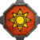The ignorant know them as, "lizardmen", the wise know them as, "Defenders of the world". For millennia these reptilian beasts of old have watched from a close and afar. They were created by the mythical godlike beings known only as the "Old Ones". However, in a terrible cataclysm the Old Ones went missing and the Lizardmen stranded. Now they relentlessly seek out golden plaques containing the will of their masters and piece together the great plan the Old Ones had for this world. 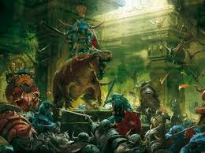 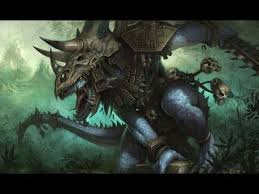 The lizardmen are made of up 3 main castes, first there are the Slann. The Slann were created by the old ones themselves, created as an image of themselves. They possess a mind and intellect that contemplates in the timespan of centuries, and t hey harbor a magical prowess so powerful that all other races pale in comparison. The second caste consists of the Saurus, the warrior caste. They are the perfect warriors and predators, born out of spawning pools fully formed. They follow the will of the Slann fervently and their prowess in battle is formidable. The third and final caste are the agile, clever skinks. They serve as the working caste of artisans, workers, scribes, along with others. They are the servants to the Slann helping to administrate and rule. The lizardmen seek the ancient plaques of the old ones. In the game you play as Lord Mazdamundi, the most powerful living Slann still alive, and manage the city of Hexoatl and its empire. You and Lustria are under attack from all sides, and you must fight to survive and complete the great plan of the old ones. His subordinate, the great Kroq-Gar of Xhotl. He leads the last defender faction from across the world in the southlands. Kroq-Gar is an ancient Saurus, who has lived for thousands of years. He is perhaps one of the greatest warriors to ever live. Thousands of years of killing and destroying have gifted him the skill, strength, and knowledge to best any opponent.
Skaven
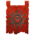 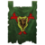 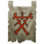The verminous ratmen known as the Skaven, infest every corner of the world. They are a near endless horde of foul rats. When they arise from the darkness, they form a literal tide of vermin, a vermintide if you will. They are the plague and scourge of this world, created by their twisted god, the horned rat. They are they stuff of nightmares. 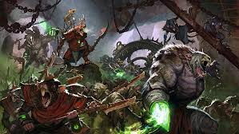 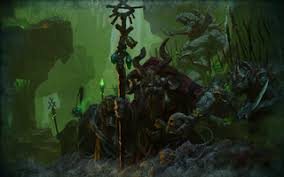 Under the earth, they form a vast interconnected under-empire of ratmen. Made of several under cities which are ruled by warring clans of ratmen. At the blighted heart of it all is the rotten capital city of Skavenblight. It is here that the council of thirteen rule all of skavendom. The Skaven seek Warpstone to power their rituals of the vortex. In the game you can play as Lord Skrolk of Clan Pestilens. They are ultimate harbingers of plague and disease, lepers from which the most foul of poxes and flu's arise from. They are one of the four great clans of Skavendom. The second faction is Clan Mors led by Queek Headtaker. Clan Mors is one the most powerful warrior clans out there, their ratmen possess an unusually high level of loyalty and there leader is a formidable warrior in his own right.
Dark Elves
The dark elves or Druchii are one of the 3 elven races. They split from the high elves long ago in a terrible civil war. They are a sadistic, powerful, and cruel race. They live harsh, cold lives from which harsh and cold elves are born out of. They are militaristic and practice in dark and evil rituals and practices. 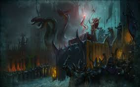 They left the elven continent of Ulthuan and fled to the cold and harsh continent of Naggaroth. There they managed to survive and now live in twisted cities of black towers and cold hard mountains. The Druchii have an entire slave network in place. They worship sinister gods and are constantly trying to become more powerful. Often times they band together to try and destroy the high elves, although they always fail. The Druchii seek Scrolls of Hekarti which would power their rituals of the vortex. 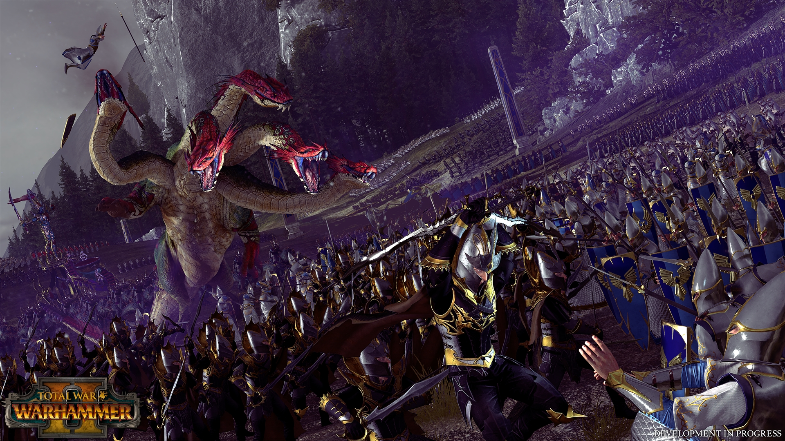 In the game, you play as Naggarond or the Cult of Pleasure. The city of Naggarond is led by Malekith, the witch king. He has been alive for hundreds of years and was the heir to the Phoenix throne of the high elves, however he was denied his place. He was the one who led the war that devastated Ulthuan and led to the exodus of the dark elves. In him is a dark cold fury, he bides his time to forward his plots to retake Ulthuan and his rightful place. The Cult of Pleasure is led by Malekith's mother, Morathi. She was the consort of Aenerion the Defender, first phoenix king of Ulthuan. She was however a servant of the dark Chaos gods and eventually fled with her son to Naggaroth.
High Elves
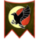The high elves or Asur, are one the oldest and most powerful races on this world. They were created long ago by the Old Ones and live on the continent of Ulthuan. They are a paragon of civilization, they have large cities with advanced technology and diplomacy. There continent is the only left in the world that has yet to feel the scourge of the skaven. In the center of Ulthuan lies the great vortex, created by the Asur long ago to stop the great catastrophe. 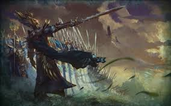 Sensing that the vortex is failing, the Asur wish to heal and mend it. However dark forces are on the move, and many challenges are in there way The Asur face problems on the inside as well, the high elves are a dying race. Political intrigue gridlocks everything and the dark elves are ever present. The Asur seek way fragments which would power the rituals of the vortex. 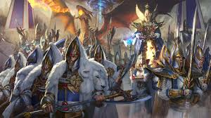 You can play as Lothern or the Order of Loremasters. The great city of Lothern is the capital of Ulthuan and the seat of the Phoenix King. Leading the Lothern faction is Tyrion, Defender of Ulthuan. Perhaps the greatest warrior of his time and descendant of Aenerion. He leads the elves to victory and salvation. The Order of Loremasters is lead by Tyrion's brother, Teclis. While Tyrion is a great warrior Teclis is a powerful mage. He is in Lustria, searching for way fragments and trying to find ways of saving the vortex.